Skills 是編排（orchestration），不是知識本身。一個 Skill 規定「什麼關鍵字觸發 / 呼叫哪些工具 / 套用哪個 Domain SOP」。Skill metadata 永遠常駐於 AI Client context；body 與 Domain 被引用時才載入。本頁列 54 個 Skill 的描述、觸發關鍵字與對應 Domain。
何時觸發 + 呼叫哪些 tool + 什麼順序。54 個。
法規條文、SOP、計算公式。79 個。被 Skill 引用。
原子操作（query / create / modify）。180 個 MCP tools。
「不要把每個 Domain 都升級成 Skill」——這是本專案的核心架構原則。詳見 22 命題。
完整三層定義見 三層架構 V2。
複製給合作對象 / 列印貼牆。

| Skill | 分類 | 用途 | 主 Domain |
|---|---|---|---|
/fire-safety-check | A 法規 | 防火時效 / 走廊 / 外牆開口 | fire-rating / corridor / exterior-wall |
/smoke-exhaust | A 法規 | 無窗居室 / 排煙有效面積 | smoke-exhaust-review |
/building-compliance | A 法規 | 採光比 / 容積率 / 停車 | daylight / floor-area |
/parking-check | A 法規 | 淨空高度 / 數量分類 | parking-clearance / parking-space-review |
/wall-orientation-check | A 法規 | 外牆 Exterior/Interior Side | wall-check |
/smoke-detector-check | A 法規 | 偵煙探測器五項規定檢核 | smoke-detector-check |
/curtain-wall | B 設計 | 帷幕牆面板配置 | curtain-wall-pattern |
/facade-generation | B 設計 | AI 立面面板生成 | facade-generation |
/element-coloring | B 設計 | 依參數值上色 | element-coloring-workflow |
/element-query | B 設計 | 三階段查詢協議 | element-query-workflow |
/auto-dimension | C 文件 | Ray-Cast / BoundingBox 標註 | auto-dimension-workflow |
/detail-component-sync | C 文件 | AE-numbering 編號同步 | detail-component-sync |
/dependent-view-crop | C 文件 | 網格邊界批次裁剪 | dependent-view-crop-workflow |
/sheet-management | C 文件 | 批建圖紙 / 圖號修正 / 視埠 | sheet-viewport-management |
/stair-hidden-line | C 文件 | 剖面樓梯虛線 | stair-hidden-line-workflow |
/wall-section-batch | C 文件 | 牆面套管批次平行剖面 | — |
/copy-detail-items | C 文件 | 批次複製詳圖項目到多視圖 | — |
/dedup-detail-elements | C 文件 | 刪除重複 detail element | dedup-detail-elements-workflow |
/text-note-batch | C 文件 | 跨視圖批次移動 TextNote | — |
/align-views-on-sheets | C 文件 | 批次對齊 view 範圍 + viewport 位置 | — |
/batch-apply-view-template | C 文件 | 批次套用 ViewTemplate | — |
/viewport-arrangement | C 文件 | 圖紙視埠排列與對齊 | — |
/scale-drafting-width | C 文件 | DraftingView 表格寬 / 高縮放 | — |
/floor-plan-from-template | C 文件 | 依範本批次建立樓層平面 | — |
/copy-sheets-cross-project | C 文件 | 跨專案複製含 model views 圖紙 | — |
/excel-to-legend | C 文件 | Excel 表格匯入 Drafting View | — |
/detect-clashes | D 分析 | MEP × CSA 碰撞 | mep-csa-clash-detection |
/mep-settings-curation | D 分析 | 管徑/風管尺寸目錄盤點與增刪 | mep-mechanical-settings |
/set-project-units | D 分析 | 一鍵切換專案顯示單位 | mep-mechanical-settings |
/qa-review | D 分析 | 專案品質檢核 | qa-checklist |
/dwg-beam-import | D 分析 | CAD/DWG 圖層批次建樑 | dwg-beam-import |
/dwg-column-import | D 分析 | CAD/DWG 圖層批次建柱 | dwg-column-import |
/family-inventory-cleanup | D 分析 | 族群盤點、purge / merge / rename | family-inventory-cleanup |
/unjoin-geometry | D 分析 | 批次解除幾何接合 | unjoin-geometry-workflow |
/batch-room-height | D 分析 | 批次調整房間上限高度 | room-height-limit |
/view-category-visibility | D 分析 | 視圖類別可見性批次控制 | — |
/batch-material | D 分析 | 批次材質修改（複製原材質） | — |
/partition-takeoff | D 分析 | 輕隔間牆數量計算 + CSV | revit-partition-takeoff |
/quantity-takeoff-excel | D 分析 | 可稽核數量計算 Excel | quantity-takeoff-excel |
/scaffold-takeoff | D 分析 | 室內外施工架數量計算 | scaffold-takeoff |
/tall-partition-index | D 分析 | 高牆（>6m）結構回饋索引圖 | tall-partition-index-workflow |
/threshold-opening-takeoff | D 分析 | 房間關聯門窗/門檻統計 | threshold-opening-takeoff |
/room-numbering | D 分析 | 房間重新排序 / 自動編號 | room-numbering-workflow |
/ifc-structural-sync | D 分析 | IFC 同步原生梁柱 | ifc-structural-native-sync |
/finish-schedule-governance | D 分析 | 粉刷明細表材料代碼治理 | finish-schedule-governance |
/build-revit | E 運維 | 多版本 build | (deployment-guide) |
/deploy-addon | E 運維 | DLL 部署 | (deployment-guide) |
/claude-md-sync | E 運維 | CLAUDE.md 雙向同步 | path-maintenance-qa |
/loop-up | E 運維 | 多模型分工自動迴圈修正 | qa-checklist |
/hj-pr-proposal | E 運維 | domain/skill 轉譯為 HJ PR 草案 | skill-authoring-standard |
/core-reload-dev | F 進階 | opt-in 熱重載開發迭代 | core-reload-boundary |
/domain-diagram | F 進階 | domain SOP 流程圖像化 | domain-flow-visualization |
/dll-to-mcp-tool | F 進階 | 把 DLL/.cs 封裝為 MCP 工具 | — |
/archicad-skill-adapter | F 進階 | Revit Skill 轉譯為 Archicad MCP workflow | tool-capability-boundary |
79 Skill metadata 全部常駐 → AI context window 被吃掉一大塊 → 真正需要時反而找不到。
且重複邏輯——防火 SOP 同時被消防、走廊、合規三個 Skill 引用，搬到各自 Skill body 內就重複三次。
Skill = 編排（54 個 metadata 常駐）；Domain = 知識（79 markdown，被引用才載入）。
知識複用，編排薄層。一個防火 SOP 被三個 Skill 共享，原文只有一份。